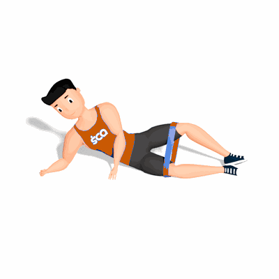

Concha com Faixa Elástica

Esse exercício tem como objetivo fortalecer os glúteos médios e oblíquos, também pode ajudar a prevenir lesões e aliviar a tensão lombar.
Ficha Técnica
Tipo: Funcional
Grupo Muscular: Glúteo
Aparelho: Nenhum
Músculos: Nenhum
Como realizar
- Coloque a faixa acima dos joelhos e deite-se de lado, com os joelhos dobrados a 90 graus. Apoie a cabeça na mão, apoie-a no bíceps ou apoie-se no antebraço;
- Contraia seu abdômen, mantenha os pés pressionados um contra o outro e leve o joelho de cima em direção ao teto o máximo que puder, sem compensar a forma;
- Lentamente, abaixe-o novamente para uma repetição.
 RC STORE
RC STORE